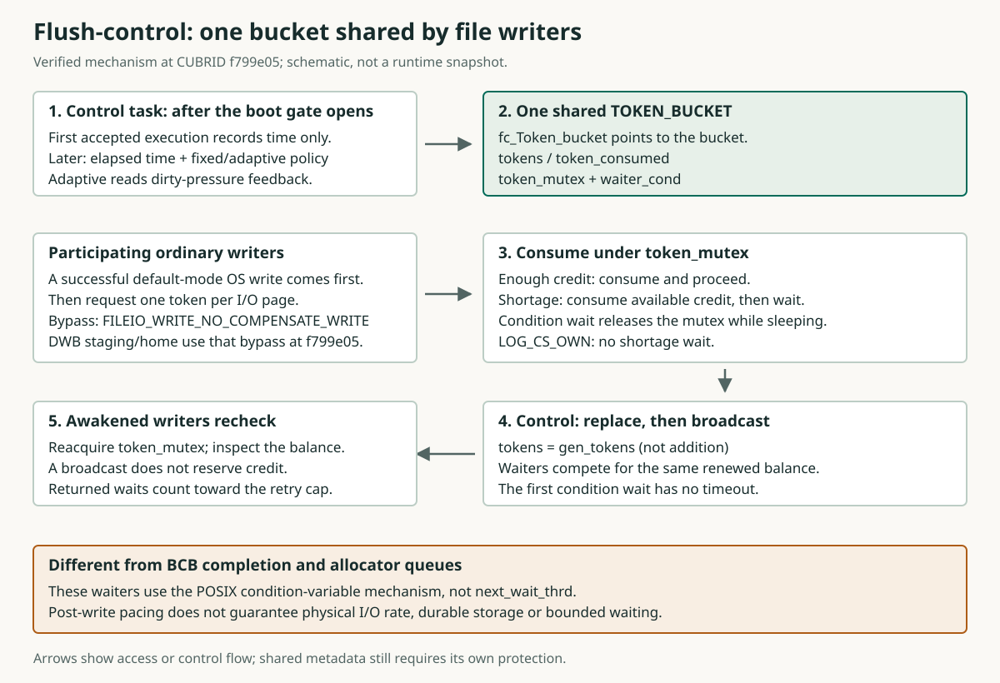

Why can a writer pause after its write succeeds?
A large scan needs free memory while updates leave many resident pages dirty: their changes still need writing. A background writer sends page images to storage to help prepare reusable memory. Rationale (Inference): flushing too slowly can leave allocation waiting for clean reusable pages; bursts of writes can compete for storage time with reads and log writes. Pacing provides a way to adjust this trade-off; it does not guarantee lower latency.
CUBRID uses a token, or credit, to account for one participating I/O-page write. The server's file-I/O token bucket is an integer balance shared by participating writers. The writer charges one token per page after the operating-system (OS) write succeeds. A shortage can pause the caller before later work; it cannot prevent the write that already succeeded.
A daemon timer determines when a task runs, but not how many pages multiple writers write. Shared credits account for their combined participating work. The flush-control daemon publishes the next allowance; ordinary writers spend it and may wait when it runs out. Configured-rate control and adaptive dirty-page feedback determine that allowance.
Q&A · Is the token a permit required before writing a page?
On this path it accounts for a page after successful OS writing. A shortage delays later caller progress. Image safety and WAL ordering must already have been satisfied independently.
Changing RAM and writing a file are separate steps
The page buffer holds database pages in CUBRID-managed RAM. An UPDATE changes a resident value from 100 to 200: a memory write. The dirty mark records outstanding writeback. Changing RAM and marking dirty do not automatically update the database file or charge tokens.
Flush later sends a stable page image toward storage. pwrite(fd, buffer, size, offset) writes bytes from memory to a file at a specified byte offset. The image is the source; the database file is the destination.
Assume DWB (double-write buffer), the optional page-image staging route, is disabled. The controller is initialized; this default-mode writer holds no log critical section (the protected log-progress region). WAL, write-ahead logging, requires durable recovery log before data writing. Tokens count participating I/O pages, not rows.
- UPDATE: change RAM bytes and mark the page dirty.
- Later flush: copy a stable image and make the required WAL durable.
- File write: pwrite the image to the database file.
- Accounting: charge tokens and possibly wait before later work.
Even with OS file caching, CUBRID must submit its RAM image through file I/O. OS writing and synchronized persistence remain separate; see synchronization.
Dirty marking · WAL and DWB/direct branches · OS write before token compensation · pwrite semantics
Which workloads send dirty pages to files?
Consider a server whose buffer pool contains pages changed by earlier transactions. SQL work creates changes or memory pressure; a later flush actor sends selected page images to files. The SQL statement itself does not spend a token for every row.
| Work or situation | Why file writing can follow |
|---|---|
Many INSERT, UPDATE, or DELETE operations | Heap and index pages become dirty. Their images later need writing; dirty marking alone performs no page-file write. |
| Checkpoint | A checkpoint selects dirty pages with outstanding recovery work and runs their flush path. |
| A large read scan needs more buffer space | A dirty replacement candidate from earlier modifications may need flushing before its frame (a page-sized RAM slot) can be reused. Reading a page does not by itself dirty it. |
The pgbuf-page-flush daemon, checkpoint work, or a foreground caller handling a request can execute the flush mechanism. Whether it charges tokens depends on the chosen file-write mode. DWB (double-write buffer) stages page images before home-page writes. With DWB disabled, the direct page-buffer path selects FILEIO_WRITE_DEFAULT_WRITE and compensates after successful writing. With DWB active, its staging-file and home-page writes use FILEIO_WRITE_NO_COMPENSATE_WRITE at this pin, skipping this token compensation. The same SQL workload can therefore generate file writes without participating in this token gate.
Victim and checkpoint flushing · Direct-path mode · DWB home write · DWB staging write
Which task replenishes the balance?
The flush-control daemon is a background thread. Its task replaces the balance shared by participating file writers. The boot gate is the shared Boolean boot_Enabled_flush_daemons: false makes this task skip its work; true allows it to proceed.
The thread can already exist while log recovery is running. After log_initialize() performs recovery and the following startup check succeeds, server boot calls BO_ENABLE_FLUSH_DAEMONS() to set the flag to true. “The gate opens” means this permission changes. Each task entry checks BO_IS_FLUSH_DAEMON_AVAILABLE(); while closed, it returns before recording a timestamp or generating tokens.
The first execution that sees the open gate records a timestamp and returns without generating tokens. A later execution measures elapsed time and takes the adaptive or fixed-rate branch. Opening the gate itself does not wake the thread; flush-control observes it on a later scheduled task entry. The daemon lifecycle places this transition in the server startup sequence.
pgbuf_flush_control_daemon_task::execute
→ fileio_flush_control_add_tokens
→ fileio_flush_control_get_desired_rate
→ pgbuf_flush_control_from_dirty_ratioThe shown calls belong to the adaptive branch with an initialized bucket. Fixed-rate control skips the last two calls.
Source: Gate definition · Startup permission · page_buffer.c:17112–17143 · file_io.c:839–929
Q&A · Why does the first gate-open pass produce no credits?
It establishes the timestamp from which a later pass measures elapsed time. Thread existence or gate opening therefore does not prove the first allowance has been published.
What must exist before writers can share tokens?
This startup example is independent of the later number examples. Server startup attempts flush-control creation as the fourth page-buffer daemon role. The task initializes shared bucket storage before the manager starts its thread.
- Initialize the bucket mutex, the lock that allows only one writer or refresh task to update the balance at a time.
- Set the token balance and consumption counters to zero.
- Initialize a condition variable, the notification mechanism on which short-of-credit writers can sleep.
- Publish the bucket pointer, then ask the manager to create the thread with a compiled 50 ms period.
The zero balance does not describe writes. The first gate-open task only timestamps; a subsequent task generates the first allowance.
Bucket initialization · First active task · Creation
Q&A · Why publish the bucket only after its mutex and condition are initialized?
Writers can use a published bucket. Publishing earlier would expose synchronization state that is not ready. The described initialization sequence establishes those resources before making the pointer visible.
What happens if optional control creation fails?
The bucket is a shared page-credit balance. Its mutex permits one updater at a time; its condition variable lets short-of-credit writers wait for notification. Before the bucket pointer is published, writers see no bucket. Initialization errors leave different local resources:
| Failure point | Pinned local outcome |
|---|---|
| Mutex initialization | Return an error before publishing the bucket. |
| Condition initialization | Return after the mutex was initialized; this branch has no local mutex destroy. |
On either returned error, the caller deletes the task without calling its retire() method and creates no control daemon. With the bucket pointer unpublished, token acquisition returns immediately. Other page-flush paths still exist.
After successful initialization, manager creation can return NULL for unavailable entries; this caller does not check it or retire the task. Allocation and thread-construction exceptions also have no local recovery wrapper here. These are source-visible cleanup limits; no reached production failure is established.
Returned init errors · Task deletion / manager call · Entry / allocation boundary
Q&A · Does no published bucket mean a writer waits forever for tokens?
No. Token acquisition returns immediately when the bucket pointer is absent. That bypass explains loss of this pacing, while source-visible resource cleanup issues require separate investigation.
How does a writer spend credit after writing?
Start with an initialized shared bucket and an ordinary file writer. An ordinary writer does not own the log critical section, the lock-protected region used for log progress. Its successful OS write uses FILEIO_WRITE_DEFAULT_WRITE, so it enters fileio_compensate_flush().
- Request one token per page already written.
- Under the bucket mutex, consume available tokens and record consumption.
- If tokens cover the request, unlock and continue. Otherwise, an ordinary writer may wait on the condition variable for another allowance.
A condition wait releases the mutex while sleeping and reacquires it before returning. The refresh task can therefore update the bucket. On return, the writer retries under the mutex: a notification alone does not promise sufficient tokens.
Independent example: This ordinary writer successfully writes a three-page batch in default mode with two credits remaining. No other writer or refresh overlaps the charge. It consumes two tokens and may wait to account for the remaining page. The batch is already written; sleeping delays later work.
This is accounting followed by a possible pause: write → charge → wait if needed → continue. It can pace a repeating writer by delaying its next write. The pin establishes this order, without documenting why the original authors chose it. A limiter that reserves credit before writing would be a different policy.
Consume / wait · Successful single-page write · Successful multi-page write
Q&A · If a multi-page write succeeds in one OS call, how many tokens are requested?
One per page on the participating path, not one per syscall. A batch can therefore create a larger credit request even though it was submitted through one call.
Token waiters sleep on a shared condition variable
This is an independent wait path. An ordinary writer's participating OS write succeeded, but credits are insufficient to account for its already-written pages. TOKEN_BUCKET stores the shared credit balance and is addressed by fc_Token_bucket. The local tb points to that bucket. tokens is the balance, token_mutex protects it, and waiter_cond is the condition variable for waiting on the deficit. gen_tokens is the new interval allowance.
/* fileio_flush_control_get_token */
pthread_cond_wait (&tb->waiter_cond, &tb->token_mutex);
/* fileio_flush_control_add_tokens: bucket mutex held */
tb->tokens = gen_tokens;
pthread_cond_broadcast (&tb->waiter_cond);An ordinary writer waiting on its deficit releases the bucket mutex while sleeping. Under that same mutex, flush-control replaces the balance and broadcasts a retry notification to writers waiting on this condition variable. The POSIX condition-variable implementation manages sleeping-thread registration and wakeup. CUBRID does not dequeue these writers individually from a BCB's next_wait_thrd list or a direct-victim queue.
Awakened writers reacquire the mutex and inspect and consume the balance. Another writer can consume it first: broadcast does not promise to satisfy every request. This path paces progress after successful OS writing, retaining the log-critical-section-owner bypass and the escape after ten wait returns. Distinguish it from notification of BCB flush completion or frame assignment.
file_io.h:433–441 · file_io.c:751–829 · file_io.c:879–890
Q&A · Does broadcast give each sleeping writer its own allowance?
No. They compete for the same refreshed balance after reacquiring the mutex. One writer can consume credit before another runs, so each must recheck its remaining request.
token_consumed aggregates credit consumed from the shared bucket. Participating writers account pages after successful OS writes. Control replaces the balance and notifies; awakened writers recheck the same balance. This does not consume BCB waiter lists or allocator queues.

Why does the next allowance replace the old balance?
The refresh task and writers share one mutex-protected token balance. Each refresh publishes a new interval allowance; unused credits from the old interval are discarded.
- Lock the bucket and collect consumption and participating-request statistics.
- Compute the adaptive or configured allowance.
- Assign the new allowance to
tokens, reset interval counters, and broadcast to sleeping writers before unlocking.
Q14 · Replace the token balance
Constructed starting state: Independent example: an interval sets tokens to 7. Writers consume some, leaving 3. The next interval computes 5; no consumption overlaps the update.
Prediction: What is the balance immediately after the update?
Discuss, then reveal
It is 5: the mutex-protected update replaces the balance, rather than adding 5 to 3. Compensation occurs after successful participating OS writes. Bypass paths and the escape after ten condition returns prevent a strict write-volume ceiling. Each wait is untimed.
Optional follow-up: Which other paths must be explained before claiming a strict write bound?
Q&A · Why does replacing credits avoid banking idle allowance?
Unused credits are discarded at refresh rather than saved for a later burst. Accumulation would be a different policy; replacement still supplies no strict write ceiling because charging is post-write and has bypasses.
How do completed writes spend credit?
Independent schedule: tokens are page credits protected by the bucket mutex; successful default-mode writes precede charging, with no consumption during refresh. Step 5 resets to zero: A is an ordinary writer; B owns the log critical section, a protected log-progress region. Both have already written.
1. Flush-control sets seven tokens
- OS-write boundary
- no write assumed
- Shared tokens
- 7
- Caller progress
- ready
- Update / guard
- budget set under bucket mutex
Controlling guard: Open boot gate and initialized bucket
Changed / result: Starting balance=7; no writes inferred from budget
2. Ordinary writer completes four writes
- OS-write boundary
- 4 successful writes
- Shared tokens
- 7
- Caller progress
- reaches compensation
- Update / guard
- successful OS write → token request
Controlling guard: Default compensated path; OS write must succeed
Changed / result: Write count 0→4 before token compensation
3. Writer spends credit under the mutex
- OS-write boundary
- 4 successful writes
- Shared tokens
- 3
- Caller progress
- continues
- Update / guard
- 4 tokens consumed
Controlling guard: Available tokens cover requests
Changed / result: Tokens 7→3; the writes have already happened
4. Flush-control replaces, then broadcasts
- OS-write boundary
- same 4 writes
- Shared tokens
- 5
- Caller progress
- waiting writers may retry
- Update / guard
- replace under mutex → broadcast
Controlling guard: New computed interval budget=5; no overlapping consumption
Changed / result: Tokens 3→5, not 8; broadcast is a retry opportunity
5. Independent shortage branches
- OS-write boundary
- A and B writes already succeeded
- Shared tokens
- 0 (fresh shortage case)
- Caller progress
- A: may wait; B: proceeds
- Update / guard
- soft pacing; no strict write ceiling
Controlling guard: Reset tokens=0. A may wait; LOG_CS_OWN B must not wait here
Changed / result: A waits; B proceeds. Ten returned waits give no elapsed-time bound.
Source basis: constructed schedule, not runtime evidence. post-write:4122–4204 · token wait:751–829 · replacement:850–891
Q&A · Can writers have completed writes while the balance still shows its old value?
Yes. Successful writes precede the mutex-protected charge. A balance snapshot taken between those events cannot be interpreted as an exact count of storage work already completed.
Which administrator change affects the next refresh?
IO_PAGESIZE is the byte size of one I/O page; bytes/s measures bytes per second. At this pin, these public settings accept DBA changes across the server through SET SYSTEM PARAMETERS. The command changes the parameter registry; it does not save cubrid.conf or recreate the bucket.
| Online setting / default | Next effect |
|---|---|
adaptive_flush_control=yesBoolean | The next refresh selects adaptive feedback when yes, or configured-rate control when no. |
max_flush_size_per_secondDefault: 10,000 × IO_PAGESIZE bytes/sMinimum: one I/O page/s | Only the next non-adaptive refresh reads this rate. It is not an adaptive ceiling. |
For example, SET SYSTEM PARAMETERS 'adaptive_flush_control=no' switches the next refresh branch. No runtime mutation was executed for this seminar. The deprecated max_flush_pages_per_second alias expresses the same rate in pages/s.
With adaptive control disabled, the default is 10,000 page credits/s: 500 tokens per 50 ms, or 156.25 MiB/s at 16 KiB/page. The calculation is new tokens = floor(configured pages/s × actual elapsed seconds), discarding the fractional part; 100 ms would generate 1,000 tokens. The 50 ms timer targets roughly 20 refreshes/s and does not guarantee their execution times. One token accounts for one page, not one OS call or one physical-device I/O.
Flags / defaults / units · Consumer branch · Mutation validation
Q&A · Does max_flush_size_per_second cap the adaptive branch?
No. The fixed-rate branch reads that setting. Adaptive control computes its allowance from feedback and the compiled floor, so increasing the fixed-rate value does not change that branch.
Q&A · Does a 500-token allowance mean exactly 500 pages will be written?
No. It is accounting credit for participating work, not a command to write pages. Actual demand, safety checks, preparation delays and bypass paths determine the work performed.
How does feedback change the next allowance?
Adaptive control starts from the previous generated allowance and inspects unused tokens plus the pool's dirty-page count. Dirty means a resident page still has a write obligation.
- If unused tokens remain and dirty pressure is positive, keep the previous allowance. Otherwise subtract 0.1 × the unused tokens, with integer truncation.
- If no tokens remain, add the larger of the dirty-pressure suggestion or 0.5 × the previous allowance.
- Apply the compiled 40 MiB/s floor, scaled by actual elapsed time and I/O page size.
Dirty feedback responds to counts above half the pool and to growth above its retained prior count. These counts, the balance, and the previous allowance are live computed state. The 50 ms period, half-pool target, floor, 0.5 growth, and 0.1 drop are compiled policy, with no separate operator knobs.
The default is adaptive, so there is no fixed number of writes per second. At 16 KiB/page, the floor is 2,560 page credits/s, or 128 tokens for a 50 ms interval; it does not force that many writes. An independent arithmetic example starts at 128 tokens: with every balance exhausted, a zero dirty-pressure suggestion, and every interval exactly 50 ms, the next allowances are 192 → 288 → 432 → 648. They can exceed the fixed mode's 500-token default. This is a constructed calculation, not measured throughput.
Compiled floor / rates · Adaptive allowance · Dirty feedback
Q&A · Why keep the allowance when dirty pressure rises despite unused credits?
The pinned branch avoids shrinking credit in that situation. Unused credit alone does not show that less preparation is needed; dirty work may still be building while another bottleneck delays consumption.
Does faster storage require a higher configured rate?
Assume a storage upgrade can sustain more writes while the workload still produces dirty pages. A faster disk alone does not require a setting change. First identify the selected control branch and whether the writer spends time waiting for tokens.
| Selected branch | What the upgrade changes | What to adjust |
|---|---|---|
adaptive_flush_control=yes (default) | Faster consumption can exhaust the allowance sooner and make later allowances grow. This feedback also depends on dirty state and time spent preparing flushes. | Increasing max_flush_size_per_second has no effect on this branch. |
adaptive_flush_control=no | The configured rate stays the same after a hardware upgrade. | If token waits limit progress while storage has spare capacity, test a higher finite rate. |
-- DBA example: a finite 1 GiB/s allowance, not a measured recommendation
SET SYSTEM PARAMETERS 'adaptive_flush_control=no;max_flush_size_per_second=1G';At 16 KiB/page this example means 65,536 page credits/s and about 3,276 tokens over 50 ms after truncation. It changes the running server; save the chosen settings in cubrid.conf to retain them after restart. Compare token-wait time, dirty backlog, device queueing, read latency and commit latency under the same mixed workload. WAL, page preparation, locks, DWB or synchronization may still limit progress. This is a proposed comparison; no tuning experiment was executed.
I/O capability and flush preparation · Branch and feedback
Current develop comparison
On 2026-10-13, the remote develop tip was 276f7e94c85b3e843bb9d0642c3315ac5bd62681. Its token producer/consumer, adaptive constants, parameter defaults/ranges, dirty feedback and 50 ms daemon setup match the seminar baseline in the checked source ranges. This checks source behavior, not a deployed server configuration.
Compared file-I/O implementation · Compared parameter registry
Q&A · What should be checked before increasing a fixed configured rate?
Establish that token waits limit progress while storage has capacity, then compare the same mixed workload’s dirty backlog, queueing, read and commit latency. A faster device alone does not identify the limiting stage.
What would effectively unlimited tokens gain and cost?
This revision has no public unlimited-token switch. adaptive_flush_control=no selects a finite configured rate; it does not disable pacing. The rate accepts 1 through INT_MAX pages/s internally, so neither 0 nor −1 means unlimited. A sufficiently large finite rate can make shortages rare for a particular workload, while token accounting, its mutex and periodic refresh still run.
| Policy consequence (Inference) | When it matters |
|---|---|
| Less token waiting; potentially faster dirty-page drain and clean-candidate preparation | The token wait must be the limiting factor, with capacity available elsewhere. Throughput improvement is not guaranteed. |
| More concentrated data writes can compete with reads and log I/O | Queueing, read and commit tail latency, and synchronization bursts may increase when the shared storage path is busy. |
| A high fixed rate gives up adaptive pacing | A rate that works for a batch may be excessive when foreground work grows or available storage capacity falls. |
Tokens govern pacing. WAL ordering, DWB protection, synchronization policy and protected BCB rechecks still govern safe writes and reuse. Raising the rate does not remove them. A source change to remove waiting must preserve those responsibilities: fileio_compensate_flush() also handles synchronization after token acquisition, so skipping that entire function would change more than pacing. OS-write success still does not establish durable storage.
Finite range and branch setting · Compensation also synchronizes
Q&A · Would skipping fileio_compensate_flush remove only token waiting?
No. That function also performs synchronization accounting after token acquisition. Removing the whole call would change another responsibility, so a pacing redesign must preserve it explicitly.
Which writes bypass a credit shortage?
Start after an OS write returns successfully. The writer's mode and lock ownership decide whether it uses the bucket and whether it waits.
| Current path or state | Consequence |
|---|---|
| Default mode, ordinary caller | Consume credit; wait and retry if short. At most ten condition returns, with no elapsed-time bound. |
LOG_CS_OWN: caller owns the log critical section | Record demand and consume available credit; return without waiting for the deficit. |
FILEIO_WRITE_NO_COMPENSATE_WRITE | Skip compensation; the pinned DWB staging and home-page paths use this mode. |
| No published bucket | Token acquisition returns without waiting. |
fileio_write() and fileio_write_pages() compensate only after a successful default-mode write. Their error returns occur before this accounting. Success at OS writing still does not by itself establish synchronized storage durability.
Balance arithmetic takes constant work per attempt. Broadcast and scheduling costs grow with sleeping writers. The bypasses prevent a universal storage-throughput ceiling.
No-bucket / log-owner / wait paths · Write success / error boundary
Q&A · Does an OS-write error still consume tokens on this path?
The shown single-page and multi-page error returns occur before compensation. The post-write accounting applies to successful participating writes; do not infer attempted or physical-device work from token consumption alone.
Why do two writers leave the shortage differently?
A token is a credit charged after a participating page write. The bucket mutex protects its balance; a condition return only gives an ordinary writer a chance to retry.
Q15 · Different callers after a write
Independent starting state: Writer A is an ordinary caller. Writer B owns the log critical section, the protected region needed for log progress. Each has successfully completed a default-mode OS write and then reaches compensation with insufficient credit. B keeps that ownership; no refresh has arrived.
Visible branch rule: An ordinary caller may wait. A log-critical-section owner records demand but never waits here for missing tokens. Ordinary waits are untimed; only returned waits count toward the ten-return escape.
Prediction: Which branch determines how their later progress differs?
Discuss, then reveal
LOG_CS_OWN distinguishes them. A may sleep and retry; B consumes any available credit, accounts demand, and returns. Both writes already happened. Even A's first wait can last beyond ten 50 ms periods, because the retry counter advances only when a wait returns.
Optional follow-up: How would you describe pacing while including these two branches?
Q&A · Why bypass waiting for the log-critical-section owner?
Waiting while owning a resource needed for log progress can create a dependency cycle. This branch accounts demand but avoids the deficit wait; it is also why the policy is not a universal write ceiling.
Who destroys the bucket, and when?
Begin with a running control daemon and writers that can use its published bucket. Safe teardown needs all dependent writers to stop using that bucket before its mutex and condition variable are destroyed.
- The destroying caller sets the looper's stop flag and wakes the daemon sleeper.
- A running task finishes and the worker leaves its loop.
- The worker stops and retires its execution context, then calls task
retire(). The control task unpublishes and finalizes the bucket here. - The worker thread exits. The caller's
join()returns; the manager then deletes the daemon and clears its pointer.
Control is destroyed last among the four page-buffer roles. Pool/log/DWB finalization follows group destruction; restart errors first close the boot gate and destroy the page-buffer and DWB groups. A stop request or a cleared pointer alone does not establish the writer-lifetime boundary. The control task must return before its own join completes. Dependent writers' I/O and untimed token waits separately constrain when bucket destruction is safe; no shutdown deadline follows.
Task bucket cleanup · Stop / wake / join · Worker retirement · Delete / clear · Restart-error gate / groups
Q&A · Does closing the boot gate make the bucket safe to destroy immediately?
No. It prevents later task work but does not cancel a running task or retire all users. Bucket destruction must follow the shutdown lifetime protocol while no required user can still touch its synchronization state.
Which other actor writes or synchronizes data?
The control daemon changes pacing credit. Other actors still own log persistence, recovery progress, page copying, and storage synchronization.
| Actor | Separate responsibility |
|---|---|
log-flush | Make append-log pages durable for WAL: write-ahead logging requires the relevant recovery log before data-page propagation. |
log-checkpoint | Advance recovery writeback. Its own configurable timer defaults to 360 seconds; oldest_unflush_lsa marks the oldest pending log obligation used for page selection. |
| Foreground / WRITE owner | A request thread or thread with exclusive page-write access can capture and submit a stable page image. |
| DWB helpers | The double-write buffer stages stable images before home-page writes to help recover torn pages. Accepting an image is separate from synchronized home completion. |
These are separate actors, rather than extra copies of the maintenance, page-flush, post-flush, and token-control roles.
Checkpoint selection · DWB helpers
Q&A · Can increasing token credit make WAL durable sooner by itself?
No. The control task publishes pacing credit, while log persistence belongs to other actors. Less token waiting does not prove that WAL forcing, DWB propagation or synchronization became faster.
Does an accepted setting rebuild storage resources?
IO_PAGESIZE is the byte size of one I/O page; bytes/s means bytes per second. Synchronization asks storage to persist pending writes. A participating compensation call reaches sync accounting after token handling; a successful OS write and a sync request are different events.
| Setting / class | Default and consumer effect at this pin |
|---|---|
sync_on_flush_sizePublic, DBA online | 200 × IO_PAGESIZE bytes; minimum one I/O page, so normal operator zero is rejected. The next participating compensation read checks whether the page counter is greater than the converted threshold; then it resets the counter and requests synchronization. |
double_write_buffer_sizePublic, registry online; active resource cached | 2 MiB, integer bytes; allowed 0–32 MiB. DWB reads size at creation. An accepted registry update does not resize the existing buffer; restart/recreation is required for resource effect. |
The deprecated sync_on_nflush alias expresses the same sync threshold in pages. It is not another independent limit. The active DWB cache and the token bucket are separate resources; switching adaptive control does not recreate either.
Sync flags / default · Counter greater-than test · DWB registration · DWB creation input
Q&A · Does an accepted DWB size change resize its existing memory?
Not in the inspected path. The registry value can change while the active resource keeps its creation-time size. Resource recreation or restart is a separate effect from accepting the setting.
How would saving unused credit change a burst?
A refill is an interval allowance
Independent comparison: an ordinary caller, holding no log critical section, already wrote four pages in default mode. Two credits remain; refresh generates three. Compare replacement, addition, and no pacing, preserving mutex protection and recovery ordering.
1. End of previous interval
- Implemented replacement
- tokens=2
- Accumulation alternative
- tokens=2
- No-pacing alternative
- no allowance
- Already-written demand
- OS write completed
Guard / assumption: Tokens do not authorize image correctness or WAL order.
Changed / outcome: Idle allowance has not been consumed.
2. Publish three new tokens
- Implemented replacement
- tokens=3
- Accumulation alternative
- tokens=5
- No-pacing alternative
- no allowance
- Already-written demand
- charge=4
Guard / assumption: Pinned assignment replaces tokens; accumulating is a different policy.
Changed / outcome: Accumulation can retain idle credit for a later burst.
3. Account for four written pages
- Implemented replacement
- consume 3; deficit 1; wait/retry
- Accumulation alternative
- consume 4; tokens=1
- No-pacing alternative
- continue immediately
- Already-written demand
- four pages already written
Guard / assumption: This ordinary caller waits on a deficit; a log-critical-section owner would bypass that wait. It is untimed.
Changed / outcome: Pacing changes future caller progress, not bytes already submitted.
Q&A · Would accumulating idle credit affect the four pages already written?
No. Those writes precede compensation in every lane. Accumulation changes whether this caller can continue immediately and may permit a later burst; it cannot authorize or undo those completed writes.
D28 · Do equal quota samples or ten retries prove no progress?
This independent diagnostic case compares two control loops. A quota is a retention target for a private replacement domain, not permission to use page bytes. adjust_age counts accepted quota-adjustment epochs, meaning passes that consume samples and update policy state. Such a pass can calculate the same quota again.
A token condition wait has no timeout. Its retry count increases only when that wait returns; the compiled 50 ms refresh period is a scheduling target, not a bound on notification or execution.
Starting evidence: A profiler samples quota=64 twice, but adjust_age advances. One writer is still asleep in its first condition wait. A reviewer calls the policy frozen and the wait bounded by ten periods. Which inference does the evidence support?
Challenge, then reveal the bounded answer
The advanced epoch contradicts “no accepted quota pass.” Equal quota values can accompany consumed samples and changed time or zones. The sleeping writer has not yet added a returned wait to its retry count. Ten condition returns provide no finite elapsed-time bound.
Follow-up: “Should we repair the skipped backup immediately?” The pin's maintenance backup loops are skipped as written; that source anomaly alone does not establish allocator starvation. First separate assignments by producer and measure impact under supported conditions.
Discriminating observation: Propose recording accepted epochs, consumed samples, zones, assignments by producer, refresh times, and condition returns. Controlled changing workloads can compare static and adaptive quotas. Q14–Q17 keep the separate policy and pacing challenges.
Accepted quota epoch · Returned waits
Q&A · Why does ten retries not imply a 500 ms wait limit?
The count advances only when an untimed condition wait returns. Even the first wait can exceed ten nominal refresh periods, and scheduling or token competition can further delay progress.
Which assignment discards the old allowance?
Here tb points to the shared token bucket, gen_tokens is the newly computed allowance, and fc_Stats holds interval accounting. The refresh task already owns the bucket mutex before this excerpt.
/* initialization statistics */
fc_Stats.num_pages = 0;
fc_Stats.num_log_pages = 0;
fc_Stats.num_tokens = gen_tokens;
tb->tokens = gen_tokens;
/* signal to waiters */
pthread_cond_broadcast (&tb->waiter_cond);
pthread_mutex_unlock (&tb->token_mutex);tb->tokens = gen_tokens replaces the balance. Broadcast gives sleeping writers a retry opportunity; they must reacquire the mutex and check the new balance. Neither this assignment nor the ten-return escape turns the policy into an elapsed-time or durability guarantee.
Q&A · What must an awakened writer do before continuing?
Reacquire the bucket mutex, inspect the shared balance and consume credit for its remaining request, subject to the bypass and retry rules. Broadcast itself reserves nothing for that writer.
What extra state would a pre-write limiter need?
Independent teaching alternative: an ordinary writer has a stable image ready but has not submitted it. To limit entry to writing, move the credit decision before the OS call. A reservation records credit promised to this pending write.
- Reserve a priced byte/page allowance under protection shared with replenishment.
- Wait outside locks that replenishment or log progress needs; define how exempt callers are accounted for.
- After reservation, preserve write-ahead logging: make the required recovery log durable before submitting data.
- On cancellation before submission, return reserved credit. After partial submission or error, record actual work using an explicit error rule.
This design adds reservation and cancellation state. Holding a needed log lock while waiting for credit can form a dependency cycle and deadlock. Saving unused credit permits later bursts; replacing it discards old allowance; removing pacing lets later work proceed immediately. Those are policy choices, with no measured device-throughput ranking here.
Q&A · Why does a pre-write limiter need a cancellation rule?
A writer may reserve credits but never submit its image. The alternative must release that reservation or account actual partial work on error, without weakening WAL or blocking resources replenishment needs.
What must be enabled before counters mean anything?
Before the proposed experiment, distinguish counter collection from a timeline probe that records individual event times. Enabling counters does not create the missing write-to-wait history.
extended_statistics_activationdefaults to mask 15. It excludes page-buffer victimization bit 16 and daemon bit 64. Enable the relevant bits before relying on those grouped metrics.perfmon_initialize()caches this mask at startup. It has no normal SQL-change permission; configuration changes need restart/reinitialization for effect.- Collection must also be active through an appropriate runtime statistics utility/API, or through hidden startup option
stats_on(default false). The startup option is one route, not a requirement. - Compensation statistics record participating token-wait accounting, not the preceding OS-write latency, bypassed work, or a per-page causal timeline.
Names registered as nonhidden are not by themselves stable documented public contracts. No matching local 11.5 manual was available; these setup statements describe the inspected pin. Probes and observer-effect measurements remain proposed.
Mask registration · Activation bits · Startup cache / collection · Hidden stats_on
Q&A · Do compensation statistics include the earlier OS-write latency?
They record participating token-wait accounting, not the preceding write’s complete timing or bypassed work. To separate I/O time from post-write pacing, the proposal needs individual event timestamps.
Which recorded event would refute post-write pacing?
Unexecuted experiment proposal. Begin independently with the exact pinned revision, build, pool, log, DWB and I/O settings recorded. Enable needed counters and collection; add separate timeline probes and record their overhead.
- Hypothesis
- Replacement changes later bursts; a count of returned waits gives no elapsed-time bound.
- Controlled change
- Keep page-write order and refresh schedule fixed. Compare replacement, accumulation, and the pre-write reservation teaching design; separate ordinary and log-critical-section callers.
- Proposed event probes
- Timestamp OS-write return, post-write charge, balance replacement/broadcast, wait start/return, and exit reason. Include bypass mode and bucket availability. Aggregate compensation statistics cannot supply this history.
- Falsifier and limit
- On the stated successful default-mode path, a charge observed before that OS write would contradict the pinned-path explanation. Any recorded latency applies to that run; ten returned waits cannot prove a universal time bound.
Q&A · Why distinguish ordinary writers from log-critical-section owners in the experiment?
Their shortage behavior differs even with the same balance. Mixing them could make bypassed progress look like credit satisfaction or hide the ordinary writer’s post-write wait.